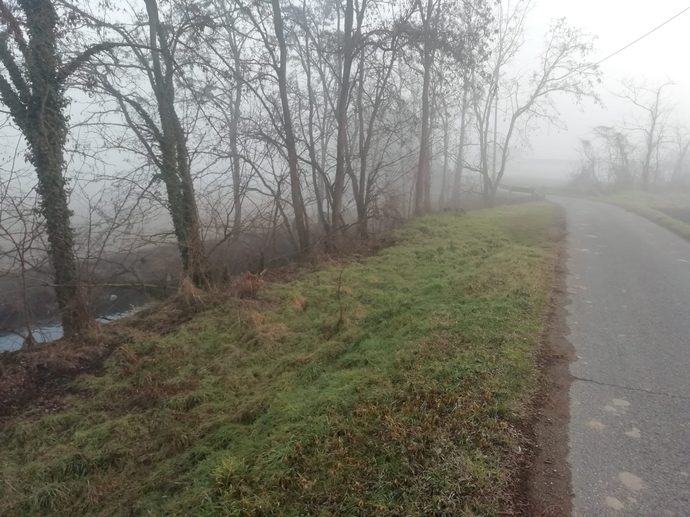
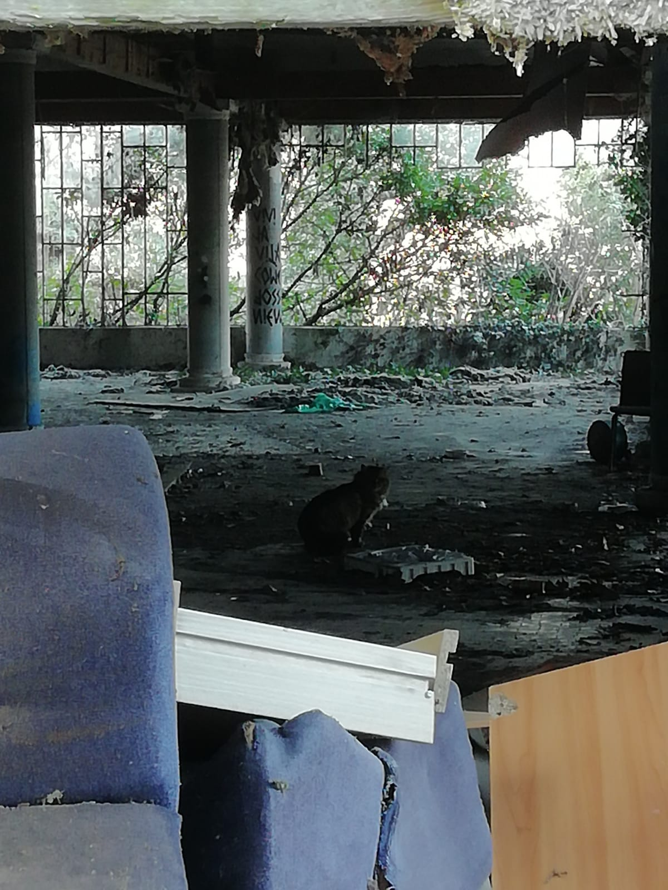

<!DOCTYPE html>
<head>
    <meta http-equiv="content-type" content="text/html; charset=UTF-8" />

        <script>
            L_NO_TOUCH = false;
            L_DISABLE_3D = false;
        </script>

    <style>html, body {width: 100%;height: 100%;margin: 0;padding: 0;}</style>
    <style>#map {position:absolute;top:0;bottom:0;right:0;left:0;}</style>
    <script src="https://cdn.jsdelivr.net/npm/leaflet@1.6.0/dist/leaflet.js"></script>
    <script src="https://code.jquery.com/jquery-1.12.4.min.js"></script>
    <script src="https://maxcdn.bootstrapcdn.com/bootstrap/3.2.0/js/bootstrap.min.js"></script>
    <script src="https://cdnjs.cloudflare.com/ajax/libs/Leaflet.awesome-markers/2.0.2/leaflet.awesome-markers.js"></script>
    <link rel="stylesheet" href="https://cdn.jsdelivr.net/npm/leaflet@1.6.0/dist/leaflet.css"/>
    <link rel="stylesheet" href="https://maxcdn.bootstrapcdn.com/bootstrap/3.2.0/css/bootstrap.min.css"/>
    <link rel="stylesheet" href="https://maxcdn.bootstrapcdn.com/bootstrap/3.2.0/css/bootstrap-theme.min.css"/>
    <link rel="stylesheet" href="https://maxcdn.bootstrapcdn.com/font-awesome/4.6.3/css/font-awesome.min.css"/>
    <link rel="stylesheet" href="https://cdnjs.cloudflare.com/ajax/libs/Leaflet.awesome-markers/2.0.2/leaflet.awesome-markers.css"/>
    <link rel="stylesheet" href="https://cdn.jsdelivr.net/gh/python-visualization/folium/folium/templates/leaflet.awesome.rotate.min.css"/>

            <meta name="viewport" content="width=device-width,
                initial-scale=1.0, maximum-scale=1.0, user-scalable=no" />
            <style>
                #map_14f016fe30ab480bbe4a148fcd5bf017 {
                    position: relative;
                    width: 100.0%;
                    height: 100.0%;
                    left: 0.0%;
                    top: 0.0%;
                }
            </style>

</head>
<body>

            <div class="folium-map" id="map_14f016fe30ab480bbe4a148fcd5bf017" ></div>

</body>
<script>

            var map_14f016fe30ab480bbe4a148fcd5bf017 = L.map(
                "map_14f016fe30ab480bbe4a148fcd5bf017",
                {
                    center: [45.3169681, 8.857812],
                    crs: L.CRS.EPSG3857,
                    maxBounds: [[45.279, 8.81], [45.4, 8.92]],
                    zoom: 14,
                    zoomControl: true,
                    preferCanvas: false,
                }
            );


            var tile_layer_14c75824ab7e46dd984333c757068dea = L.tileLayer(
                "https://{s}.tile.openstreetmap.org/{z}/{x}/{y}.png",
                {"attribution": "Data by \u0026copy; \u003ca href=\"http://openstreetmap.org\"\u003eOpenStreetMap\u003c/a\u003e, under \u003ca href=\"http://www.openstreetmap.org/copyright\"\u003eODbL\u003c/a\u003e.", "detectRetina": false, "maxNativeZoom": 18, "maxZoom": 18, "minZoom": 14, "noWrap": false, "opacity": 1, "subdomains": "abc", "tms": false}
            ).addTo(map_14f016fe30ab480bbe4a148fcd5bf017);


            var marker_c4b258edb9014a05bacc98b53f162ed7 = L.marker(
                [45.3230625, 8.850245651],
                {}
            ).addTo(map_14f016fe30ab480bbe4a148fcd5bf017);


        var custom_icon_7a5a8ab4a45a421bb6ee0ad094bbe672 = L.icon({"iconSize": [30, 30], "iconUrl": "https://emojipedia-us.s3.dualstack.us-west-1.amazonaws.com/thumbs/120/whatsapp/314/speaker-low-volume_1f508.png"});
        marker_c4b258edb9014a05bacc98b53f162ed7.setIcon(custom_icon_7a5a8ab4a45a421bb6ee0ad094bbe672);


        var popup_7c51155475234cc9853ab8e92d71f5b1 = L.popup({"maxWidth": "270"});


            var html_27f69da68d304004b9753fb2729c0252 = $(`<div id="html_27f69da68d304004b9753fb2729c0252" style="width: 100.0%; height: 100.0%;">                      <h1 style = "font-size: 30px;"><b>Pizzeria</b></h1>                       <br>                               PLACEHOLDER                      <br><br>                       <i>Guido                                         <audio id="audio_GU_VIALE_MONTEGRAPPA_PIZZERIA" loop>                      <source src="dati/GU_VIALE_MONTEGRAPPA_PIZZERIA/pizzeria.mp3" type="audio/mpeg">                      </audio>                      </div>`)[0];
            popup_7c51155475234cc9853ab8e92d71f5b1.setContent(html_27f69da68d304004b9753fb2729c0252);


        marker_c4b258edb9014a05bacc98b53f162ed7.bindPopup(popup_7c51155475234cc9853ab8e92d71f5b1)
marker_c4b258edb9014a05bacc98b53f162ed7.on('click', function (e) {this.openPopup(); document.getElementById('audio_GU_VIALE_MONTEGRAPPA_PIZZERIA').play();});
        ;


            var marker_07ab3901ad424fd6864e2499b9a03f99 = L.marker(
                [45.31211904, 8.860001045],
                {}
            ).addTo(map_14f016fe30ab480bbe4a148fcd5bf017);


        var custom_icon_1a2afcf4366a4c41abc5c70ecc66f96c = L.icon({"iconSize": [30, 30], "iconUrl": "https://emojipedia-us.s3.dualstack.us-west-1.amazonaws.com/thumbs/120/whatsapp/314/speaker-low-volume_1f508.png"});
        marker_07ab3901ad424fd6864e2499b9a03f99.setIcon(custom_icon_1a2afcf4366a4c41abc5c70ecc66f96c);


        var popup_24ee42502ff44ae6b5a4ac3e8bf36369 = L.popup({"maxWidth": "270"});


            var html_74cbffe907e641e2bfbbf20b7dbe4633 = $(`<div id="html_74cbffe907e641e2bfbbf20b7dbe4633" style="width: 100.0%; height: 100.0%;">                      <h1 style = "font-size: 30px;"><b>Giacchetta Canale</b></h1>                       <br>                               PLACEHOLDER                      <br><br>                       <i>Guido                                         <audio id="audio_GU_GIACCHETTA_CANALE" loop>                      <source src="dati/GU_GIACCHETTA_CANALE/ZOOM0027.mp3" type="audio/mpeg">                      </audio>                      </div>`)[0];
            popup_24ee42502ff44ae6b5a4ac3e8bf36369.setContent(html_74cbffe907e641e2bfbbf20b7dbe4633);


        marker_07ab3901ad424fd6864e2499b9a03f99.bindPopup(popup_24ee42502ff44ae6b5a4ac3e8bf36369)
marker_07ab3901ad424fd6864e2499b9a03f99.on('click', function (e) {this.openPopup(); document.getElementById('audio_GU_GIACCHETTA_CANALE').play();});
        ;


            var marker_84caa71b9f3a458caa7e902e13c9ebc4 = L.marker(
                [45.3064081, 8.866924562],
                {}
            ).addTo(map_14f016fe30ab480bbe4a148fcd5bf017);


        var custom_icon_d6307590d1024220a6297b02ac31a9e5 = L.icon({"iconSize": [30, 30], "iconUrl": "https://emojipedia-us.s3.dualstack.us-west-1.amazonaws.com/thumbs/120/whatsapp/314/speaker-low-volume_1f508.png"});
        marker_84caa71b9f3a458caa7e902e13c9ebc4.setIcon(custom_icon_d6307590d1024220a6297b02ac31a9e5);


        var popup_bbc1ae23c8b4479195c15e3f317b2804 = L.popup({"maxWidth": "270"});


            var html_ba0c4918c434454fae7394caf3b696df = $(`<div id="html_ba0c4918c434454fae7394caf3b696df" style="width: 100.0%; height: 100.0%;">                      <h1 style = "font-size: 30px;"><b>Via de chirico Canale Pioggia</b></h1>                       <br>                               PLACEHOLDER                      <br><br>                       <i>Guido                                         <audio id="audio_GU_VIA_DE_CHIRICO_CANALE_v2" loop>                      <source src="dati/GU_VIA_DE_CHIRICO_CANALE_v2/ZOOM0029.mp3" type="audio/mpeg">                      </audio>                      </div>`)[0];
            popup_bbc1ae23c8b4479195c15e3f317b2804.setContent(html_ba0c4918c434454fae7394caf3b696df);


        marker_84caa71b9f3a458caa7e902e13c9ebc4.bindPopup(popup_bbc1ae23c8b4479195c15e3f317b2804)
marker_84caa71b9f3a458caa7e902e13c9ebc4.on('click', function (e) {this.openPopup(); document.getElementById('audio_GU_VIA_DE_CHIRICO_CANALE_v2').play();});
        ;


            var marker_8072eeddefa943ac97d134d4c5484c98 = L.marker(
                [45.30644102, 8.889899845],
                {}
            ).addTo(map_14f016fe30ab480bbe4a148fcd5bf017);


        var custom_icon_e8016d22bfe74e3a983fbbdbb8e99bcd = L.icon({"iconSize": [30, 30], "iconUrl": "https://emojipedia-us.s3.dualstack.us-west-1.amazonaws.com/thumbs/120/whatsapp/314/speaker-low-volume_1f508.png"});
        marker_8072eeddefa943ac97d134d4c5484c98.setIcon(custom_icon_e8016d22bfe74e3a983fbbdbb8e99bcd);


        var popup_5b6f1053177a41e282dff0f6c5cf24ab = L.popup({"maxWidth": "270"});


            var html_bc5ca0e206b8482bb76f3831be758aac = $(`<div id="html_bc5ca0e206b8482bb76f3831be758aac" style="width: 100.0%; height: 100.0%;">                      <h1 style = "font-size: 30px;"><b>Strada per laghi di santa marta</b></h1>                       <br>                               PLACEHOLDER                      <br><br>                       <i>Guido                                         <audio id="audio_GU_AGRITURISMO_COLDIRETTI" loop>                      <source src="dati/GU_AGRITURISMO_COLDIRETTI/ZOOM0025.mp3" type="audio/mpeg">                      </audio>                      </div>`)[0];
            popup_5b6f1053177a41e282dff0f6c5cf24ab.setContent(html_bc5ca0e206b8482bb76f3831be758aac);


        marker_8072eeddefa943ac97d134d4c5484c98.bindPopup(popup_5b6f1053177a41e282dff0f6c5cf24ab)
marker_8072eeddefa943ac97d134d4c5484c98.on('click', function (e) {this.openPopup(); document.getElementById('audio_GU_AGRITURISMO_COLDIRETTI').play();});
        ;


            var marker_c38f5bc5a8614b06aea3a4aa6e70379b = L.marker(
                [45.29917137, 8.905742693],
                {}
            ).addTo(map_14f016fe30ab480bbe4a148fcd5bf017);


        var custom_icon_b05cae5058e84a869d2dd9b59205deb8 = L.icon({"iconSize": [30, 30], "iconUrl": "https://emojipedia-us.s3.dualstack.us-west-1.amazonaws.com/thumbs/120/whatsapp/314/speaker-low-volume_1f508.png"});
        marker_c38f5bc5a8614b06aea3a4aa6e70379b.setIcon(custom_icon_b05cae5058e84a869d2dd9b59205deb8);


        var popup_28badebcb62741b29fd9ade6dd491267 = L.popup({"maxWidth": "270"});


            var html_11338a3d6b1243cca26e437985b27ad7 = $(`<div id="html_11338a3d6b1243cca26e437985b27ad7" style="width: 100.0%; height: 100.0%;">                      <h1 style = "font-size: 30px;"><b>Laghetto dei piccoli</b></h1>                       <br>                               PLACEHOLDER                      <br><br>                       <i>Guido                                         <audio id="audio_GU_LAGHETTO_DEI_PICCOLI" loop>                      <source src="dati/GU_LAGHETTO_DEI_PICCOLI/ZOOM0033.mp3" type="audio/mpeg">                      </audio>                      </div>`)[0];
            popup_28badebcb62741b29fd9ade6dd491267.setContent(html_11338a3d6b1243cca26e437985b27ad7);


        marker_c38f5bc5a8614b06aea3a4aa6e70379b.bindPopup(popup_28badebcb62741b29fd9ade6dd491267)
marker_c38f5bc5a8614b06aea3a4aa6e70379b.on('click', function (e) {this.openPopup(); document.getElementById('audio_GU_LAGHETTO_DEI_PICCOLI').play();});
        ;


            var marker_b5e8553c577a430f9bbfa2b6efa04588 = L.marker(
                [45.31246512, 8.883821165],
                {}
            ).addTo(map_14f016fe30ab480bbe4a148fcd5bf017);


        var custom_icon_eb0eb79bdce34955a652fb056d3e85ba = L.icon({"iconSize": [30, 30], "iconUrl": "https://emojipedia-us.s3.dualstack.us-west-1.amazonaws.com/thumbs/120/whatsapp/314/speaker-low-volume_1f508.png"});
        marker_b5e8553c577a430f9bbfa2b6efa04588.setIcon(custom_icon_eb0eb79bdce34955a652fb056d3e85ba);


        var popup_7ffd9818a95e457cb909c7dfdd41e7ac = L.popup({"maxWidth": "270"});


            var html_90448390fc294dd6a6cb981d4b8b3f53 = $(`<div id="html_90448390fc294dd6a6cb981d4b8b3f53" style="width: 100.0%; height: 100.0%;">                      <h1 style = "font-size: 30px;"><b>Miciopolis</b></h1>                       <br>                               PLACEHOLDER                      <br><br>                       <i>Guido                                         <audio id="audio_GU_MICIOPOLIS" loop>                      <source src="dati/GU_MICIOPOLIS/ZOOM0022.mp3" type="audio/mpeg">                      </audio>                      </div>`)[0];
            popup_7ffd9818a95e457cb909c7dfdd41e7ac.setContent(html_90448390fc294dd6a6cb981d4b8b3f53);


        marker_b5e8553c577a430f9bbfa2b6efa04588.bindPopup(popup_7ffd9818a95e457cb909c7dfdd41e7ac)
marker_b5e8553c577a430f9bbfa2b6efa04588.on('click', function (e) {this.openPopup(); document.getElementById('audio_GU_MICIOPOLIS').play();});
        ;


            var marker_3cf52885cd7241ea85baa0da9f344025 = L.marker(
                [45.30433837, 8.883231356],
                {}
            ).addTo(map_14f016fe30ab480bbe4a148fcd5bf017);


        var custom_icon_9dcdea3757904a7bac302b3f74f1ddfe = L.icon({"iconSize": [30, 30], "iconUrl": "https://emojipedia-us.s3.dualstack.us-west-1.amazonaws.com/thumbs/120/whatsapp/314/speaker-low-volume_1f508.png"});
        marker_3cf52885cd7241ea85baa0da9f344025.setIcon(custom_icon_9dcdea3757904a7bac302b3f74f1ddfe);


        var popup_2e5d00a88cd0496da8e538c7b3fd3066 = L.popup({"maxWidth": "270"});


            var html_d47bac890b2a47268d534ef559f2ffef = $(`<div id="html_d47bac890b2a47268d534ef559f2ffef" style="width: 100.0%; height: 100.0%;">                      <h1 style = "font-size: 30px;"><b>Strada per la Sforzesca</b></h1>                                             <br><br>                               PLACEHOLDER                      <br><br>                       <i>Guido                                         <audio id="audio_GU_STRADA_REBUFFI" loop>                      <source src="dati/GU_STRADA_REBUFFI/ZOOM0024.mp3" type="audio/mpeg">                      </audio>                      </div>`)[0];
            popup_2e5d00a88cd0496da8e538c7b3fd3066.setContent(html_d47bac890b2a47268d534ef559f2ffef);


        marker_3cf52885cd7241ea85baa0da9f344025.bindPopup(popup_2e5d00a88cd0496da8e538c7b3fd3066)
marker_3cf52885cd7241ea85baa0da9f344025.on('click', function (e) {this.openPopup(); document.getElementById('audio_GU_STRADA_REBUFFI').play();});
        ;


            var marker_8e06632dbb814a5f810374a66ad2ab15 = L.marker(
                [45.29236968, 8.884778005],
                {}
            ).addTo(map_14f016fe30ab480bbe4a148fcd5bf017);


        var custom_icon_abf9a2f4f1c443f885776990a1c0406f = L.icon({"iconSize": [30, 30], "iconUrl": "https://emojipedia-us.s3.dualstack.us-west-1.amazonaws.com/thumbs/120/whatsapp/314/speaker-low-volume_1f508.png"});
        marker_8e06632dbb814a5f810374a66ad2ab15.setIcon(custom_icon_abf9a2f4f1c443f885776990a1c0406f);


        var popup_9dc858255aa841bd8ef1e4859a7176af = L.popup({"maxWidth": "270"});


            var html_c2b34f8bbfeb479ca84cdd3b450d2c83 = $(`<div id="html_c2b34f8bbfeb479ca84cdd3b450d2c83" style="width: 100.0%; height: 100.0%;">                      <h1 style = "font-size: 30px;"><b>Cimitero musicale</b></h1>                                             <br><br>                               Mi ringrazia. Provo a suonare live sotto il suo suggerimento insieme ad altri amici.<br />Non sapendo suonare mi concentro timidamente sul Re. Rinuncio e chiudo il piano.<br />Il sottofondo è musica ambient e sono attorniato dal mio datore di lavoro.                      <br><br>                       <i>Guido                                         <audio id="audio_GU_STRADA_REBUFFI_v3" loop>                      <source src="dati/GU_STRADA_REBUFFI_v3/ZOOM0028.mp3" type="audio/mpeg">                      </audio>                      </div>`)[0];
            popup_9dc858255aa841bd8ef1e4859a7176af.setContent(html_c2b34f8bbfeb479ca84cdd3b450d2c83);


        marker_8e06632dbb814a5f810374a66ad2ab15.bindPopup(popup_9dc858255aa841bd8ef1e4859a7176af)
marker_8e06632dbb814a5f810374a66ad2ab15.on('click', function (e) {this.openPopup(); document.getElementById('audio_GU_STRADA_REBUFFI_v3').play();});
        ;


            var marker_c9e8f346d6f74a0fb20a6f35626e1bfc = L.marker(
                [45.34084406, 8.867725439],
                {}
            ).addTo(map_14f016fe30ab480bbe4a148fcd5bf017);


        var custom_icon_17e9f728de9c40fca8c95d5eace6f7e3 = L.icon({"iconSize": [30, 30], "iconUrl": "https://emojipedia-us.s3.dualstack.us-west-1.amazonaws.com/thumbs/120/whatsapp/314/speaker-low-volume_1f508.png"});
        marker_c9e8f346d6f74a0fb20a6f35626e1bfc.setIcon(custom_icon_17e9f728de9c40fca8c95d5eace6f7e3);


        var popup_59c04c6de1fa4bfb99abac63d7abc51f = L.popup({"maxWidth": "270"});


            var html_89ad78d021a348dabfae684dd9da4863 = $(`<div id="html_89ad78d021a348dabfae684dd9da4863" style="width: 100.0%; height: 100.0%;">                      <h1 style = "font-size: 30px;"><b>Rave a Ticino</b></h1>                                             <br><br>                               PLACEHOLDER                      <br><br>                       <i>Guido                                         <audio id="audio_GU_RAVE_TISIN_v1" loop>                      <source src="dati/GU_RAVE_TISIN_v1/ZOOM0025.mp3" type="audio/mpeg">                      </audio>                      </div>`)[0];
            popup_59c04c6de1fa4bfb99abac63d7abc51f.setContent(html_89ad78d021a348dabfae684dd9da4863);


        marker_c9e8f346d6f74a0fb20a6f35626e1bfc.bindPopup(popup_59c04c6de1fa4bfb99abac63d7abc51f)
marker_c9e8f346d6f74a0fb20a6f35626e1bfc.on('click', function (e) {this.openPopup(); document.getElementById('audio_GU_RAVE_TISIN_v1').play();});
        ;


            var marker_db3e1d9ffa5f48d0b94f128e9e54c2b6 = L.marker(
                [45.34220987, 8.865593442],
                {}
            ).addTo(map_14f016fe30ab480bbe4a148fcd5bf017);


        var custom_icon_6e05a0bd134a4312a8e05a0f9d65f308 = L.icon({"iconSize": [30, 30], "iconUrl": "https://emojipedia-us.s3.dualstack.us-west-1.amazonaws.com/thumbs/120/whatsapp/314/speaker-low-volume_1f508.png"});
        marker_db3e1d9ffa5f48d0b94f128e9e54c2b6.setIcon(custom_icon_6e05a0bd134a4312a8e05a0f9d65f308);


        var popup_d4a082a89db64d4e96be4cb9b9f9602d = L.popup({"maxWidth": "270"});


            var html_a6da4ac2d71e498ca87324e4466a4470 = $(`<div id="html_a6da4ac2d71e498ca87324e4466a4470" style="width: 100.0%; height: 100.0%;">                      <h1 style = "font-size: 30px;"><b>Acqua dolce e cassa dritta</b></h1>                                             <br><br>                               PLACEHOLDER                      <br><br>                       <i>Guido                                         <audio id="audio_GU_RAVE_TISIN_v3" loop>                      <source src="dati/GU_RAVE_TISIN_v3/ZOOM0028.mp3" type="audio/mpeg">                      </audio>                      </div>`)[0];
            popup_d4a082a89db64d4e96be4cb9b9f9602d.setContent(html_a6da4ac2d71e498ca87324e4466a4470);


        marker_db3e1d9ffa5f48d0b94f128e9e54c2b6.bindPopup(popup_d4a082a89db64d4e96be4cb9b9f9602d)
marker_db3e1d9ffa5f48d0b94f128e9e54c2b6.on('click', function (e) {this.openPopup(); document.getElementById('audio_GU_RAVE_TISIN_v3').play();});
        ;


            var marker_9b0959f87bed42108ee2a2802aa7530e = L.marker(
                [45.34300948, 8.862928168],
                {}
            ).addTo(map_14f016fe30ab480bbe4a148fcd5bf017);


        var custom_icon_48e53a184b734e91822d4bf562cb4b3e = L.icon({"iconSize": [30, 30], "iconUrl": "https://emojipedia-us.s3.dualstack.us-west-1.amazonaws.com/thumbs/120/whatsapp/314/speaker-low-volume_1f508.png"});
        marker_9b0959f87bed42108ee2a2802aa7530e.setIcon(custom_icon_48e53a184b734e91822d4bf562cb4b3e);


        var popup_363560bacf564ed6a175dc12c243cbeb = L.popup({"maxWidth": "270"});


            var html_3717684e593c4d8093effed9ae22b233 = $(`<div id="html_3717684e593c4d8093effed9ae22b233" style="width: 100.0%; height: 100.0%;">                      <h1 style = "font-size: 30px;"><b>Birds of Rocca Petrella</b></h1>                                             <br><br>                               Qua si sente bene<br /><br />Avrei voluto scendere ma non era possibile a causa di una stramaledetta proprietà privata<br /><br />Tantè                      <br><br>                       <i>Guido                                         <audio id="audio_GU_ROCCA_PETRELLA" loop>                      <source src="dati/GU_ROCCA_PETRELLA/ZOOM0033.mp3" type="audio/mpeg">                      </audio>                      </div>`)[0];
            popup_363560bacf564ed6a175dc12c243cbeb.setContent(html_3717684e593c4d8093effed9ae22b233);


        marker_9b0959f87bed42108ee2a2802aa7530e.bindPopup(popup_363560bacf564ed6a175dc12c243cbeb)
marker_9b0959f87bed42108ee2a2802aa7530e.on('click', function (e) {this.openPopup(); document.getElementById('audio_GU_ROCCA_PETRELLA').play();});
        ;


            var marker_5b24cceb12f342f98cc72fb663bbf495 = L.marker(
                [45.33842032, 8.87050925],
                {}
            ).addTo(map_14f016fe30ab480bbe4a148fcd5bf017);


        var custom_icon_1ac406fc2ed349c8be88608a7fb5d6f8 = L.icon({"iconSize": [30, 30], "iconUrl": "https://emojipedia-us.s3.dualstack.us-west-1.amazonaws.com/thumbs/120/whatsapp/314/speaker-low-volume_1f508.png"});
        marker_5b24cceb12f342f98cc72fb663bbf495.setIcon(custom_icon_1ac406fc2ed349c8be88608a7fb5d6f8);


        var popup_76d89dcf25fd490e86e834f9632f0c1b = L.popup({"maxWidth": "270"});


            var html_a039665d60e140048f960e12f0f2d811 = $(`<div id="html_a039665d60e140048f960e12f0f2d811" style="width: 100.0%; height: 100.0%;">                      <h1 style = "font-size: 30px;"><b>UFO e ciclismo</b></h1>                       <br>                               PLACEHOLDER                      <br><br>                       <i>Guido                                         <audio id="audio_GU_CENTRALE_ENEL_v2" loop>                      <source src="dati/GU_CENTRALE_ENEL_v2/ZOOM0037.mp3" type="audio/mpeg">                      </audio>                      </div>`)[0];
            popup_76d89dcf25fd490e86e834f9632f0c1b.setContent(html_a039665d60e140048f960e12f0f2d811);


        marker_5b24cceb12f342f98cc72fb663bbf495.bindPopup(popup_76d89dcf25fd490e86e834f9632f0c1b)
marker_5b24cceb12f342f98cc72fb663bbf495.on('click', function (e) {this.openPopup(); document.getElementById('audio_GU_CENTRALE_ENEL_v2').play();});
        ;


            var marker_432f6304be20431d8af6b8acedd784fa = L.marker(
                [45.34069404, 8.878451395],
                {}
            ).addTo(map_14f016fe30ab480bbe4a148fcd5bf017);


        var custom_icon_fff1581f84c845cdad6f931e76092a1d = L.icon({"iconSize": [30, 30], "iconUrl": "https://emojipedia-us.s3.dualstack.us-west-1.amazonaws.com/thumbs/120/whatsapp/314/speaker-low-volume_1f508.png"});
        marker_432f6304be20431d8af6b8acedd784fa.setIcon(custom_icon_fff1581f84c845cdad6f931e76092a1d);


        var popup_f7bc8a654dd546eebbafcbd98182ef71 = L.popup({"maxWidth": "270"});


            var html_20aa1b4e5f8346fca2a3e866a8af79a7 = $(`<div id="html_20aa1b4e5f8346fca2a3e866a8af79a7" style="width: 100.0%; height: 100.0%;">                      <h1 style = "font-size: 30px;"><b>Fiume azzurro</b></h1>                       <br>                               PLACEHOLDER                      <br><br>                       <i>Guido                                         <audio id="audio_GU_TICINO_v3" loop>                      <source src="dati/GU_TICINO_v3/ZOOM0026.mp3" type="audio/mpeg">                      </audio>                      </div>`)[0];
            popup_f7bc8a654dd546eebbafcbd98182ef71.setContent(html_20aa1b4e5f8346fca2a3e866a8af79a7);


        marker_432f6304be20431d8af6b8acedd784fa.bindPopup(popup_f7bc8a654dd546eebbafcbd98182ef71)
marker_432f6304be20431d8af6b8acedd784fa.on('click', function (e) {this.openPopup(); document.getElementById('audio_GU_TICINO_v3').play();});
        ;


            var marker_d9d3fcb6e6b04e26b07714e4308b0d64 = L.marker(
                [45.33987551, 8.88500919],
                {}
            ).addTo(map_14f016fe30ab480bbe4a148fcd5bf017);


        var custom_icon_74399573565443f1aab1cc27f831f790 = L.icon({"iconSize": [30, 30], "iconUrl": "https://emojipedia-us.s3.dualstack.us-west-1.amazonaws.com/thumbs/120/whatsapp/314/speaker-low-volume_1f508.png"});
        marker_d9d3fcb6e6b04e26b07714e4308b0d64.setIcon(custom_icon_74399573565443f1aab1cc27f831f790);


        var popup_f00f01a79c1c45f698bbe20dddcc6d3e = L.popup({"maxWidth": "270"});


            var html_fd1d5786e68a48de908299464cb204a1 = $(`<div id="html_fd1d5786e68a48de908299464cb204a1" style="width: 100.0%; height: 100.0%;">                      <h1 style = "font-size: 30px;"><b>Cigni fx</b></h1>                       <br>                               PLACEHOLDER                      <br><br>                       <i>Guido                                         <audio id="audio_GU_TICINO_v4" loop>                      <source src="dati/GU_TICINO_v4/ZOOM0027.mp3" type="audio/mpeg">                      </audio>                      </div>`)[0];
            popup_f00f01a79c1c45f698bbe20dddcc6d3e.setContent(html_fd1d5786e68a48de908299464cb204a1);


        marker_d9d3fcb6e6b04e26b07714e4308b0d64.bindPopup(popup_f00f01a79c1c45f698bbe20dddcc6d3e)
marker_d9d3fcb6e6b04e26b07714e4308b0d64.on('click', function (e) {this.openPopup(); document.getElementById('audio_GU_TICINO_v4').play();});
        ;


            var marker_112768ed55d2454e87a6418f0bacd3a2 = L.marker(
                [45.33114616, 8.861188604],
                {}
            ).addTo(map_14f016fe30ab480bbe4a148fcd5bf017);


        var custom_icon_89b99fc5768b4be39f99a2ed967b150c = L.icon({"iconSize": [30, 30], "iconUrl": "https://emojipedia-us.s3.dualstack.us-west-1.amazonaws.com/thumbs/120/whatsapp/314/speaker-low-volume_1f508.png"});
        marker_112768ed55d2454e87a6418f0bacd3a2.setIcon(custom_icon_89b99fc5768b4be39f99a2ed967b150c);


        var popup_20abcef71d284f598a9c4567c4c15703 = L.popup({"maxWidth": "270"});


            var html_0f709677eb76414d9fc1ed0336b0d6a3 = $(`<div id="html_0f709677eb76414d9fc1ed0336b0d6a3" style="width: 100.0%; height: 100.0%;">                      <h1 style = "font-size: 30px;"><b>What are you doing here? Get the F out!!!</b></h1>                       <br>                               PLACEHOLDER                      <br><br>                       <i>Guido                                         <audio id="audio_GU_POLIGONO" loop>                      <source src="dati/GU_POLIGONO/ZOOM0031.mp3" type="audio/mpeg">                      </audio>                      </div>`)[0];
            popup_20abcef71d284f598a9c4567c4c15703.setContent(html_0f709677eb76414d9fc1ed0336b0d6a3);


        marker_112768ed55d2454e87a6418f0bacd3a2.bindPopup(popup_20abcef71d284f598a9c4567c4c15703)
marker_112768ed55d2454e87a6418f0bacd3a2.on('click', function (e) {this.openPopup(); document.getElementById('audio_GU_POLIGONO').play();});
        ;


            var marker_acb3252cf3ea46428f9f2c0a3b7fa118 = L.marker(
                [45.33321272, 8.860613964],
                {}
            ).addTo(map_14f016fe30ab480bbe4a148fcd5bf017);


        var custom_icon_1deb82b2e1bf4ae187f870ebff4adc6d = L.icon({"iconSize": [30, 30], "iconUrl": "https://emojipedia-us.s3.dualstack.us-west-1.amazonaws.com/thumbs/120/whatsapp/314/speaker-low-volume_1f508.png"});
        marker_acb3252cf3ea46428f9f2c0a3b7fa118.setIcon(custom_icon_1deb82b2e1bf4ae187f870ebff4adc6d);


        var popup_9f4a3205a9574c4baa8cd164844f40db = L.popup({"maxWidth": "270"});


            var html_c69a98b8383a4d3ab77ae96c78eb1c27 = $(`<div id="html_c69a98b8383a4d3ab77ae96c78eb1c27" style="width: 100.0%; height: 100.0%;">                      <h1 style = "font-size: 30px;"><b>Campane</b></h1>                       <br>                               PLACEHOLDER                      <br><br>                       <i>Guido                                         <audio id="audio_GU_STRADA_MORABASSA" loop>                      <source src="dati/GU_STRADA_MORABASSA/ZOOM0032.mp3" type="audio/mpeg">                      </audio>                      </div>`)[0];
            popup_9f4a3205a9574c4baa8cd164844f40db.setContent(html_c69a98b8383a4d3ab77ae96c78eb1c27);


        marker_acb3252cf3ea46428f9f2c0a3b7fa118.bindPopup(popup_9f4a3205a9574c4baa8cd164844f40db)
marker_acb3252cf3ea46428f9f2c0a3b7fa118.on('click', function (e) {this.openPopup(); document.getElementById('audio_GU_STRADA_MORABASSA').play();});
        ;


            var marker_b2db2ad7c4ae49f5949d4550056ceb9f = L.marker(
                [45.33092487, 8.861099374],
                {}
            ).addTo(map_14f016fe30ab480bbe4a148fcd5bf017);


        var custom_icon_c7dcabd75fad4a54a9ca02e85089b6b9 = L.icon({"iconSize": [30, 30], "iconUrl": "https://emojipedia-us.s3.dualstack.us-west-1.amazonaws.com/thumbs/120/whatsapp/314/speaker-low-volume_1f508.png"});
        marker_b2db2ad7c4ae49f5949d4550056ceb9f.setIcon(custom_icon_c7dcabd75fad4a54a9ca02e85089b6b9);


        var popup_395b086ff32d44179d862b4493e835dd = L.popup({"maxWidth": "270"});


            var html_f56eaba94a3a44928df3091a5e51a0a5 = $(`<div id="html_f56eaba94a3a44928df3091a5e51a0a5" style="width: 100.0%; height: 100.0%;">                      <h1 style = "font-size: 30px;"><b>Acqua a Morabassa</b></h1>                       <br>                               PLACEHOLDER                      <br><br>                       <i>Guido                                         <audio id="audio_GU_MOLINO_MORABASSA_v1" loop>                      <source src="dati/GU_MOLINO_MORABASSA_v1/ZOOM0034.mp3" type="audio/mpeg">                      </audio>                      </div>`)[0];
            popup_395b086ff32d44179d862b4493e835dd.setContent(html_f56eaba94a3a44928df3091a5e51a0a5);


        marker_b2db2ad7c4ae49f5949d4550056ceb9f.bindPopup(popup_395b086ff32d44179d862b4493e835dd)
marker_b2db2ad7c4ae49f5949d4550056ceb9f.on('click', function (e) {this.openPopup(); document.getElementById('audio_GU_MOLINO_MORABASSA_v1').play();});
        ;


            var marker_2c8a734155784d35b3063f896f3f4180 = L.marker(
                [45.3200354, 8.855686002],
                {}
            ).addTo(map_14f016fe30ab480bbe4a148fcd5bf017);


        var custom_icon_a25dca857ecd47f2a6663b1dec89aa21 = L.icon({"iconSize": [30, 30], "iconUrl": "https://emojipedia-us.s3.dualstack.us-west-1.amazonaws.com/thumbs/120/whatsapp/314/speaker-low-volume_1f508.png"});
        marker_2c8a734155784d35b3063f896f3f4180.setIcon(custom_icon_a25dca857ecd47f2a6663b1dec89aa21);


        var popup_cb9d9160efe54b1cbf0ad16179a3dd58 = L.popup({"maxWidth": "270"});


            var html_58334249b67b41f584b345ddc679c362 = $(`<div id="html_58334249b67b41f584b345ddc679c362" style="width: 100.0%; height: 100.0%;">                      <h1 style = "font-size: 30px;"><b>Pavè</b></h1>                       <br>                               PLACEHOLDER                      <br><br>                       <i>Guido                                         <audio id="audio_GU_MADONNA_7_DOLORI" loop>                      <source src="dati/GU_MADONNA_7_DOLORI/ZOOM0023.mp3" type="audio/mpeg">                      </audio>                      </div>`)[0];
            popup_cb9d9160efe54b1cbf0ad16179a3dd58.setContent(html_58334249b67b41f584b345ddc679c362);


        marker_2c8a734155784d35b3063f896f3f4180.bindPopup(popup_cb9d9160efe54b1cbf0ad16179a3dd58)
marker_2c8a734155784d35b3063f896f3f4180.on('click', function (e) {this.openPopup(); document.getElementById('audio_GU_MADONNA_7_DOLORI').play();});
        ;


            var marker_b535dce671194ca39daf887ac7bb0fc1 = L.marker(
                [45.316389, 8.856819],
                {}
            ).addTo(map_14f016fe30ab480bbe4a148fcd5bf017);


        var custom_icon_606d741b6eba44d090e4f961cd47116d = L.icon({"iconSize": [30, 30], "iconUrl": "https://emojipedia-us.s3.dualstack.us-west-1.amazonaws.com/thumbs/120/whatsapp/314/speaker-low-volume_1f508.png"});
        marker_b535dce671194ca39daf887ac7bb0fc1.setIcon(custom_icon_606d741b6eba44d090e4f961cd47116d);


        var popup_ae024dbb2ccf49449984c6d0d159f3bc = L.popup({"maxWidth": "270"});


            var html_b7c2a150c32d4a799bb565872d858557 = $(`<div id="html_b7c2a150c32d4a799bb565872d858557" style="width: 100.0%; height: 100.0%;">                      <h1 style = "font-size: 30px;"><b>Castello alle 18</b></h1>                       <br>                               PLACEHOLDER                      <br><br>                       <i>Andrea                                         <audio id="audio_AN_CASTELLO_ORE_18" loop>                      <source src="dati/AN_CASTELLO_ORE_18/castello ore 18.mp3" type="audio/mpeg">                      </audio>                      </div>`)[0];
            popup_ae024dbb2ccf49449984c6d0d159f3bc.setContent(html_b7c2a150c32d4a799bb565872d858557);


        marker_b535dce671194ca39daf887ac7bb0fc1.bindPopup(popup_ae024dbb2ccf49449984c6d0d159f3bc)
marker_b535dce671194ca39daf887ac7bb0fc1.on('click', function (e) {this.openPopup(); document.getElementById('audio_AN_CASTELLO_ORE_18').play();});
        ;


            var marker_27c17000900a47c6a00d15c62e71cd37 = L.marker(
                [45.315783, 8.856105],
                {}
            ).addTo(map_14f016fe30ab480bbe4a148fcd5bf017);


        var custom_icon_3cba1b95a90d41c5ae86e6a8705ad8b9 = L.icon({"iconSize": [30, 30], "iconUrl": "https://emojipedia-us.s3.dualstack.us-west-1.amazonaws.com/thumbs/120/whatsapp/314/speaker-low-volume_1f508.png"});
        marker_27c17000900a47c6a00d15c62e71cd37.setIcon(custom_icon_3cba1b95a90d41c5ae86e6a8705ad8b9);


        var popup_83f760de64b34ac280059810b5fa1f3f = L.popup({"maxWidth": "270"});


            var html_35665fd0cefc47c1ac59e75a1b6ebd31 = $(`<div id="html_35665fd0cefc47c1ac59e75a1b6ebd31" style="width: 100.0%; height: 100.0%;">                      <h1 style = "font-size: 30px;"><b>Portone</b></h1>                       <br>                               PLACEHOLDER                      <br><br>                       <i>Andrea                                         <audio id="audio_AN_PORTONE" loop>                      <source src="dati/AN_PORTONE/portone.mp3" type="audio/mpeg">                      </audio>                      </div>`)[0];
            popup_83f760de64b34ac280059810b5fa1f3f.setContent(html_35665fd0cefc47c1ac59e75a1b6ebd31);


        marker_27c17000900a47c6a00d15c62e71cd37.bindPopup(popup_83f760de64b34ac280059810b5fa1f3f)
marker_27c17000900a47c6a00d15c62e71cd37.on('click', function (e) {this.openPopup(); document.getElementById('audio_AN_PORTONE').play();});
        ;


            var marker_1de7799ab9cf422b986fa0add26d6547 = L.marker(
                [45.314307, 8.854067],
                {}
            ).addTo(map_14f016fe30ab480bbe4a148fcd5bf017);


        var custom_icon_a59e23a10eff4a7796139707c765180d = L.icon({"iconSize": [30, 30], "iconUrl": "https://emojipedia-us.s3.dualstack.us-west-1.amazonaws.com/thumbs/120/whatsapp/314/speaker-low-volume_1f508.png"});
        marker_1de7799ab9cf422b986fa0add26d6547.setIcon(custom_icon_a59e23a10eff4a7796139707c765180d);


        var popup_b05887f6927f4eeeb63ecfafe76a61e0 = L.popup({"maxWidth": "270"});


            var html_182d5e3417af4ab6bf254817cbc8243d = $(`<div id="html_182d5e3417af4ab6bf254817cbc8243d" style="width: 100.0%; height: 100.0%;">                      <h1 style = "font-size: 30px;"><b>Via Mulini</b></h1>                       <br>                               PLACEHOLDER                      <br><br>                       <i>Andrea                                         <audio id="audio_AN_VIA_MULINI" loop>                      <source src="dati/AN_VIA_MULINI/via mulini acqua.mp3" type="audio/mpeg">                      </audio>                      </div>`)[0];
            popup_b05887f6927f4eeeb63ecfafe76a61e0.setContent(html_182d5e3417af4ab6bf254817cbc8243d);


        marker_1de7799ab9cf422b986fa0add26d6547.bindPopup(popup_b05887f6927f4eeeb63ecfafe76a61e0)
marker_1de7799ab9cf422b986fa0add26d6547.on('click', function (e) {this.openPopup(); document.getElementById('audio_AN_VIA_MULINI').play();});
        ;


            var marker_0a08d344fba54a1db04b9c9db1029770 = L.marker(
                [45.314712, 8.850959],
                {}
            ).addTo(map_14f016fe30ab480bbe4a148fcd5bf017);


        var custom_icon_8202d6de2eb64005b00daa581a6f991b = L.icon({"iconSize": [30, 30], "iconUrl": "https://emojipedia-us.s3.dualstack.us-west-1.amazonaws.com/thumbs/120/whatsapp/314/speaker-low-volume_1f508.png"});
        marker_0a08d344fba54a1db04b9c9db1029770.setIcon(custom_icon_8202d6de2eb64005b00daa581a6f991b);


        var popup_42a81d4d618a4a5fac55b0451d1d7398 = L.popup({"maxWidth": "270"});


            var html_f0a10d59591e4e5cb6c4d36b6ceddd00 = $(`<div id="html_f0a10d59591e4e5cb6c4d36b6ceddd00" style="width: 100.0%; height: 100.0%;">                      <h1 style = "font-size: 30px;"><b>Traffico di Corso Torino</b></h1>                       <br>                               PLACEHOLDER                      <br><br>                       <i>Alice                                         <audio id="audio_AL_CORSO_TORINO_TRAFFICO" loop>                      <source src="dati/AL_CORSO_TORINO_TRAFFICO/corso torino 9 traffico.mp3" type="audio/mpeg">                      </audio>                      </div>`)[0];
            popup_42a81d4d618a4a5fac55b0451d1d7398.setContent(html_f0a10d59591e4e5cb6c4d36b6ceddd00);


        marker_0a08d344fba54a1db04b9c9db1029770.bindPopup(popup_42a81d4d618a4a5fac55b0451d1d7398)
marker_0a08d344fba54a1db04b9c9db1029770.on('click', function (e) {this.openPopup(); document.getElementById('audio_AL_CORSO_TORINO_TRAFFICO').play();});
        ;


            var marker_77e92729052b44f084b969dcbf2d266e = L.marker(
                [45.314191, 8.854374],
                {}
            ).addTo(map_14f016fe30ab480bbe4a148fcd5bf017);


        var custom_icon_a1d3d9048fd44efdaa8b1fde919a2579 = L.icon({"iconSize": [30, 30], "iconUrl": "https://emojipedia-us.s3.dualstack.us-west-1.amazonaws.com/thumbs/120/whatsapp/314/speaker-low-volume_1f508.png"});
        marker_77e92729052b44f084b969dcbf2d266e.setIcon(custom_icon_a1d3d9048fd44efdaa8b1fde919a2579);


        var popup_bc0651fc6e6f4b34bb8e3a7e7e37c08b = L.popup({"maxWidth": "270"});


            var html_b674c325064b46aab1ebbeb4ca7076a2 = $(`<div id="html_b674c325064b46aab1ebbeb4ca7076a2" style="width: 100.0%; height: 100.0%;">                      <h1 style = "font-size: 30px;"><b>Il mulino di Via Mulini</b></h1>                       <br>                               PLACEHOLDER                      <br><br>                       <i>Alice                                         <audio id="audio_AL_VIA_MULINI_MULINO" loop>                      <source src="dati/AL_VIA_MULINI_MULINO/mulino via mulini.mp3" type="audio/mpeg">                      </audio>                      </div>`)[0];
            popup_bc0651fc6e6f4b34bb8e3a7e7e37c08b.setContent(html_b674c325064b46aab1ebbeb4ca7076a2);


        marker_77e92729052b44f084b969dcbf2d266e.bindPopup(popup_bc0651fc6e6f4b34bb8e3a7e7e37c08b)
marker_77e92729052b44f084b969dcbf2d266e.on('click', function (e) {this.openPopup(); document.getElementById('audio_AL_VIA_MULINI_MULINO').play();});
        ;


</script>
